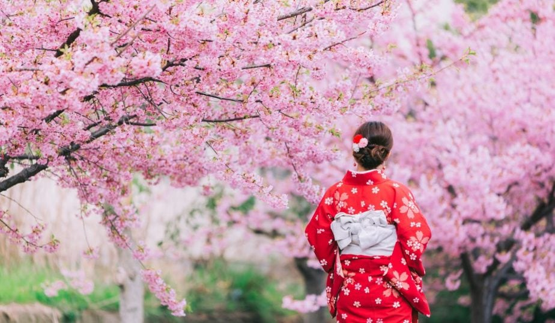
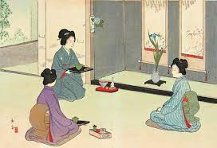
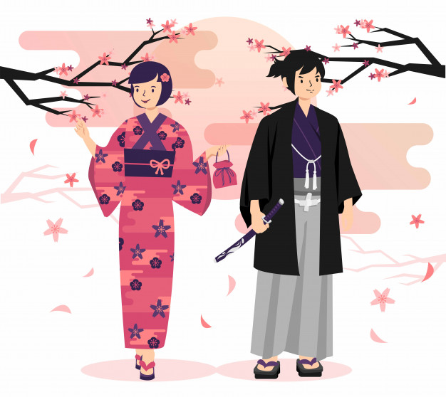
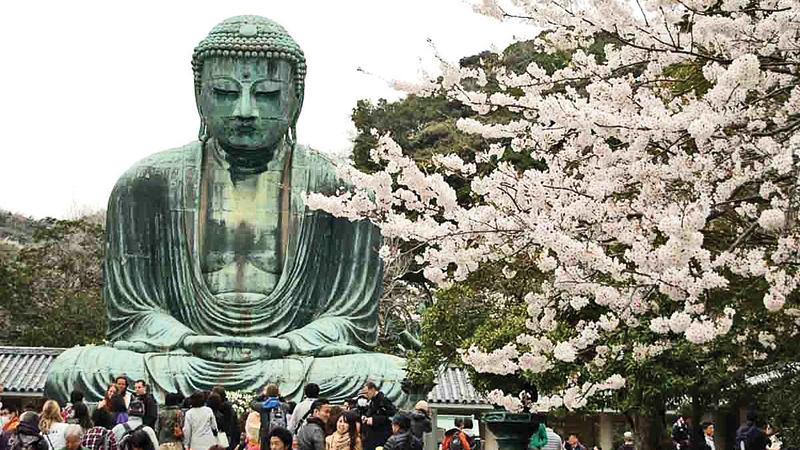
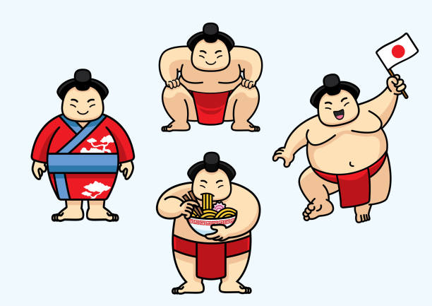

Cherry blossom Festival Japan
The Japanese Cherry Blossom Festival,
known as 'Sakura', signifies the welcoming
of Spring. The act of celebrating the festival
is called 'hanami', which literally translates
to 'the viewing of flowers.

Japanese Tea Ceremony
It is preparing and drinking matcha tea
in a ceremonial way by using traditional utensils.
The purpose of Japanese tea ceremony is to create
bonding between the host and guest and also gain
inner peace in our busy daily lives.

Wearing a Kimono
Kimono is an integral part of Japanese traditions,
and therefore it’s important to know how to wear
a kimono properly.
There are different kimonos for different occasions,
depending on their level of formality

Religion in Japanese Culture
There are two dominant religions in Japan:
Shinto and Buddhism. Neither of them has a
clear definition of God and the judgment day.
Shintoism does not even have any holy book or
the concept of sin.

Social Culture
Taking off shoes when entering someone’s house
Wearing a mask when sick
Not shaking hands and not hugging when meeting with loved ones
Bowing 45 degrees to show respect
Making the slurping sound when eating noodles
Symbolically washing hands when entering a shrine
Wearing slippers when using the restroom
Decorate ones house with dolls for the annual girls day and decorate the house with the samurai figure for the annual boys day
Throwing beans at people who dressed as demons during the “setsubun” festival
Eating a special meal called “osechi” during the new year’s day
Bathing in the evening rather than in the morning
Participating in the firework festivals or bon odori festivals during the summer by wearing a yukata.
Sumo
It is emerged as a shinto ceremony
to entertain gods. People believed
that if the gods were not pleased,
they would not bring a good harvest
season. That is why, the sumo stage,
dohyo, has been considered very
sacred. The sumo wrestlers usually eat
a high-calorie dish called “chanko nabe”
which is beef stew and vegetables hot pot.
Young sumo wrestlers consume around
20,000 calories of food a day. That is why
they can get fat so easily and quickly.
